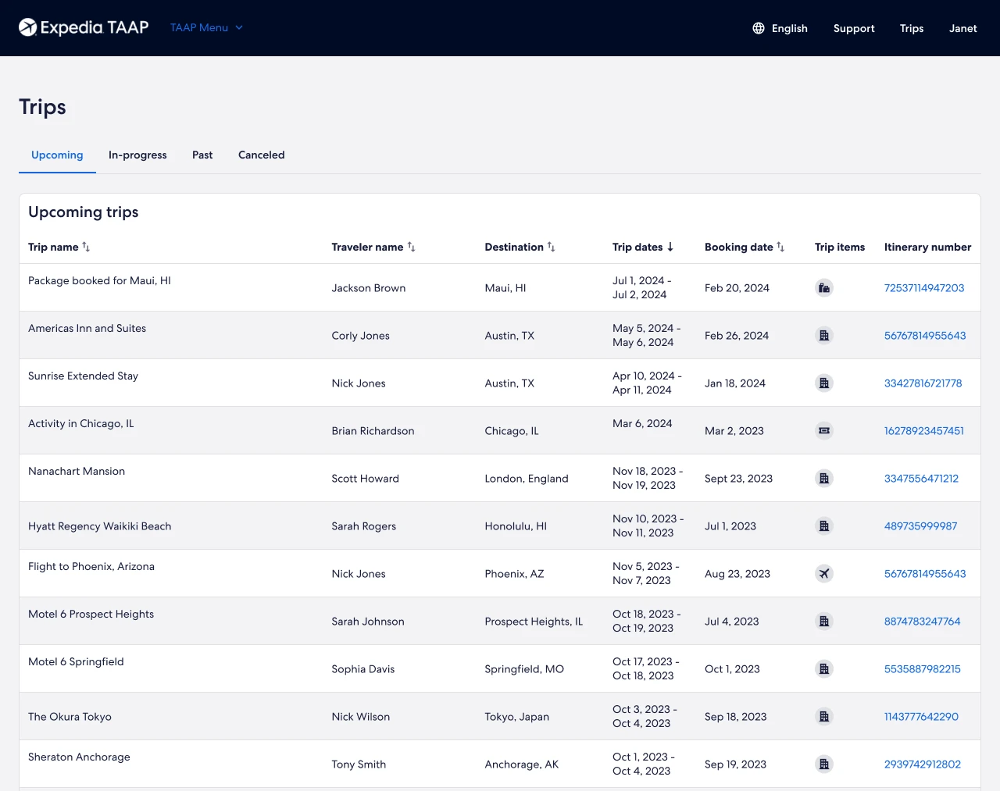
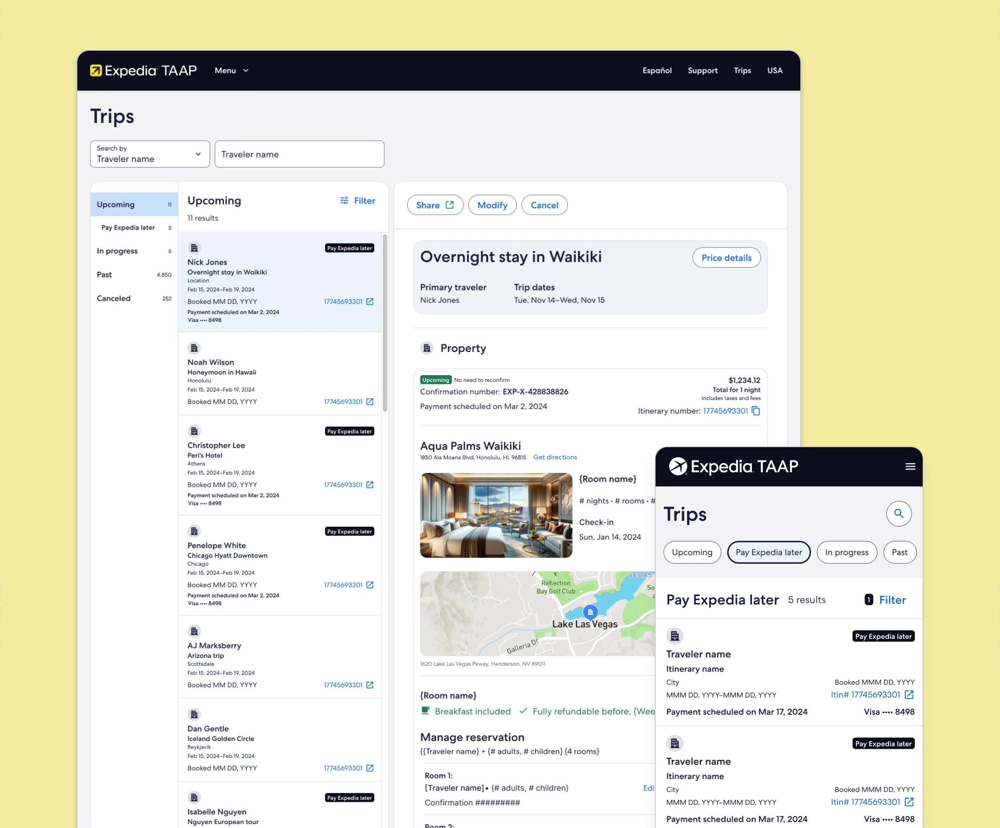
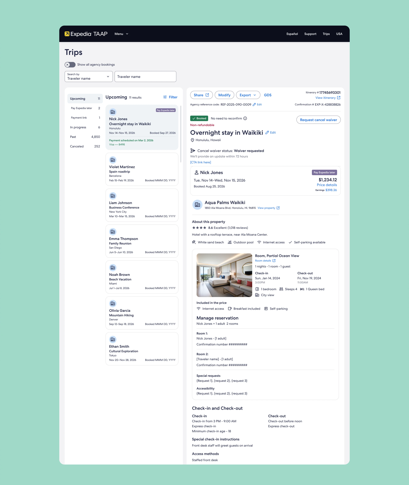

TAAP Trips
From consumer-borrowed UI to professional-grade agent tool, three generations transforming how travel agents manage, track, and act on every client booking.
- Client
- Expedia TAAP
- Role
- Design Lead · 3 Generations
- Platform
- B2B Desktop & Mobile
- Year
- 2023 – 2026
- Tools
- Figma, Miro, Zoom
The TAAP Trips page began as a consumer-borrowed UI, a simple flat list designed for personal travelers, not professional agents managing hundreds of client bookings at once.
Over the course of the project I led and designed three distinct generations, each replacing the last: a table-format redesign that shipped to production, a research-driven pivot to a richer 3-column panel view, and a targeted round of post-launch enhancements. As Design Lead I owned every screen, component, state, and interaction throughout.
Built for consumers, not professionals.
For agents managing tens or hundreds of client bookings simultaneously, the original experience was a critical gap. There was no way to search for a specific trip, no way to distinguish booking types at a glance, and no way to take action on a booking without navigating away. It treated agents like consumers rather than professionals.
Every generation of this project was driven by the same question: what does a Trips page actually need to be for a professional travel agent, and how do we make it accessible to all users, regardless of ability?
Three generations, each replacing the last.
Each generation was research-informed and accessible by design, with full WCAG annotations delivered at every dev handoff.
-
Gen 1 · 2023 Shipped to production
Table-format redesign
The first major redesign transformed the consumer pattern into a proper professional data tool.
What shipped- →Renamed “My Trips” to Trips: a professional agent workspace
- →Four status tabs and a sortable data table
- →LOB icons per row for instant booking-type ID
- →Universal search with full states · paginated results

-
Gen 2 · 2024–25 Replaced Gen 1 in production

3-column Outlook-style panel view
Post-launch research and a product-direction change drove a full redesign. Before designing, I mapped the live experience as a detailed user flow, annotating every friction point, then designed a panel layout with accessibility built in from the start.
Friction identified- ·Itinerary number not visible or linked · no cancel button
- ·No refund status · commission & earnings not visible
- ·Share flow required leaving the page entirely
- ·Font sizes too small · hover-only accessibility barriers
The result: a persistent filterable list on the left, rich trip detail in the center, and contextual actions on the right, redesigned from scratch alongside the Research team.
-
Gen 3 · 2026 In progress
Targeted post-launch enhancements
Further research surfaced 20+ specific refinements, delivered as an annotated side-by-side Figma comparison with soft/hard change categorization for engineering prioritization.
Bug fixesConfirmation number, refund status, trip-name editingNew featuresEarnings module, price details, ratings & reviewsDesign updatesLarger fonts, repositioned itinerary number, contrastContentMap replaced with a clickable address linkRemoving the map was validated independently across two research studies, a cross-project insight also confirmed in the Itinerary Builder research.

A consumer list, transformed.
Across three generations spanning 2023 to 2026, TAAP Trips was transformed from a consumer-borrowed flat list into a progressively more capable, accessible, research-informed professional tool.
- Gen 1 shipped to production: established the structural, visual, and accessibility foundation as a real B2B data interface
- Gen 2 replaced it in production: a richer contextual panel view with accessibility built in from the start
- Accessibility in every handoff: WCAG annotations delivered across all three generations, not as an afterthought
- A cross-project insight informed a platform-wide content decision, removing the map, validated across two studies
- Quantitative metrics being compiled, added once post-launch data is available
Reach: AI Booking Platform
Designing both sides of a two-sided AI booking platform for beauty & wellness, end to end, from the first wireframe to a live product.